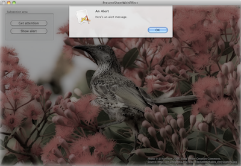

Please note: this article is part of the older "Objective-C era" on Cocoa with Love. I don't keep these articles up-to-date; please be wary of broken code or potentially out-of-date information. Read "A new era for Cocoa with Love" for more.
Presenting a Mac dialog sheet with visual cue effects
In this post, I'll show you how to use visual effects over a window to make a dialog sheet stand out when it is presented over the top. It's a pretty simple use of Core Image but is a useful technique to capture attention when needed.
Introduction
Getting the user's attention when required and drawing their focus to important areas is an important point when trying to iterate and improve your user interface.
Of particular importance: how to you force the user's attention from one part of the screen to another when an important event occurs.
That's a task that the code in this post aims to address. By visually disrupting the normal window area, we inform the user that their attention is briefly needed elsewhere.
Of course, this is not a good thing to do frequently. Forcing the user to shift their attention from one side of the screen to another is generally considered poor form. However, some screen features (especially sheets and alerts) have a fixed location so keeping the activity local is not always possible.
The sample application
Download the Xcode project for this post: PresentSheetWithEffect.zip (190kB)
The sample application shows the following window:
The aim is to make the alert — which is pretty bland — visually pop out and draw the user's attention to it (since it is modal and they're not allowed to do anything else until they dismiss it).
Visual overlays
Visual disruption of the background is common in iOS. Users of Safari in iOS would be familiar with the dark, semi-transparent overlays over the main webpage area when the keyboard focus is in the Safari address bar. Even Safari on the Mac darkens the main page except for search terms when searching for text within a page.
However, this overlay normally needs to be very dark since the color of the main page behind the overlay is not known and the overlay needs to provide contrast in as many cases as possible.
With Core Image on the Mac, we have a range of different options that don't require turning the screen completely dark. For this post, I've chosen to reduce saturation, take a little out of the brightness and apply a gloom. Of course you might prefer a different selection of filters.
An important consideration with the filters to apply: they shouldn't look too flashy and they shouldn't hurt the eyes of the user who will likely be focussed on a region within the filtered area. For example: I had initially tried a gaussian blur filter but this actually hurts your eyes a little if it is applied while you're trying to focus — you subconsciously try to focus as the blur gradually makes this impossible.
A great big block of code
The following method applies the filters and presents the sheet. The filters will only work if the window's contentView has a Core Animation layer (in this program, the Core Animation is enabled in the XIB file).
- (void)presentSheetWithWindow:(id)aSheetWindow
delegate:(id)modalWindowDelegate
didEndSelector:(SEL)didEndSelector
{
// 'sheetWindow' is an instance variable tracking the currently presented
// window. If a window is already being presented, dismiss it first before
// presenting this new one
if (sheetWindow)
{
[self dismissSheetForWindow:sheetWindow];
}
sheetWindow = [aSheetWindow retain];
// We're going to fade the effect in
CATransition *animation = [CATransition animation];
[animation setType:kCATransitionFade];
[[[[self window] contentView] layer] addAnimation:animation forKey:@"layerAnimation"];
// The effect will be applied to this new view that we'll lay over the top
// of everything else
blankingView =
[[[NSView alloc] initWithFrame:[[[self window] contentView] bounds]] autorelease];
[[[self window] contentView] addSubview:blankingView];
// Construct the three effects
CIFilter *exposureFilter = [CIFilter filterWithName:@"CIExposureAdjust"];
[exposureFilter setDefaults];
[exposureFilter setValue:[NSNumber numberWithDouble:-1.25] forKey:@"inputEV"];
CIFilter *saturationFilter = [CIFilter filterWithName:@"CIColorControls"];
[saturationFilter setDefaults];
[saturationFilter setValue:[NSNumber numberWithDouble:0.35] forKey:@"inputSaturation"];
CIFilter *gloomFilter = [CIFilter filterWithName:@"CIGloom"];
[gloomFilter setDefaults];
[gloomFilter setValue:[NSNumber numberWithDouble:0.75] forKey:@"inputIntensity"];
// Apply the effects to the blankingView layer
[[blankingView layer] setBackgroundFilters:
[NSArray arrayWithObjects:exposureFilter, saturationFilter, gloomFilter, nil]];
// Present the sheet -- different code depending on whether we're presenting
// a dialog or regular window
if ([sheetWindow isKindOfClass:[NSAlert class]])
{
if (modalWindowDelegate == nil)
{
modalWindowDelegate = self;
didEndSelector = @selector(didEndPresentedAlert:returnCode:contextInfo:);
}
[(NSAlert *)sheetWindow
beginSheetModalForWindow:[self window]
modalDelegate:modalWindowDelegate
didEndSelector:didEndSelector
contextInfo:NULL];
}
else
{
[[NSApplication sharedApplication]
beginSheet:sheetWindow
modalForWindow:[self window]
modalDelegate:modalWindowDelegate
didEndSelector:didEndSelector
contextInfo:NULL];
}
}The rest of the sample application
Download the Xcode project for this post: PresentSheetWithEffect.zip (190kB)
The sample application also shows the expected usage: a separate subview controller controls the subview but invokes the window controller to actually present the sheet.
The presentation code is written to account for the fact that different subview controllers may attempt to present errors at different times without any real coordination but the current incarnation does not allow for sheet "stacking" (i.e. if a new sheet is presented, any existing sheet is immediately dismissed). If you need stacked sheets, you'd need to make changes to permit that.
Conclusion
Core Image allows a lot of flexibility with this type of visual effect. Even if you're not trying to be as "cute" as the trio of effects used in this sample post, the ability to do something as basic as turning down the saturation is quite powerful.
Remember: the purpose with visual effects should be to speed up the user experience by drawing focus to where it is needed. If you're slowing the user down, you're doing it wrong.
Background audio through an iOS movie player